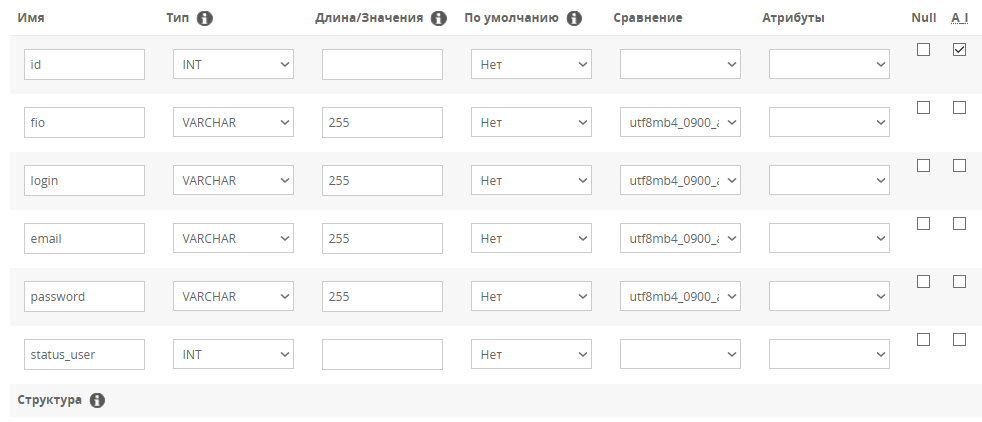
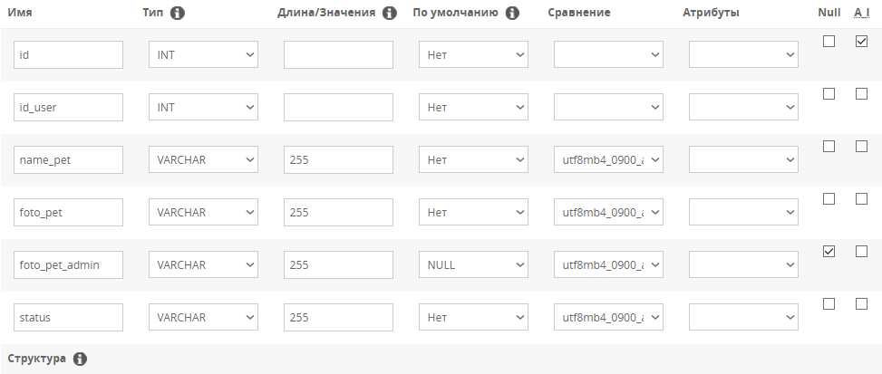
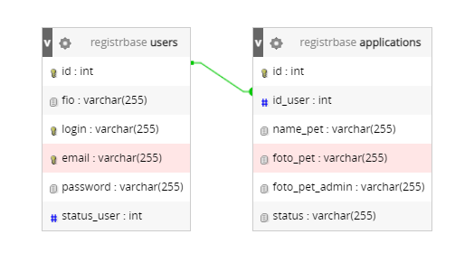
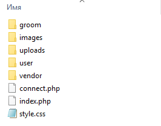
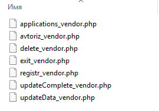

Задания по PHP
Задание - создание веб-сайта для компании "GroomRoom"
Выполненное задание можно посмотреть здесь
К вам обратилась компания «GroomRoom», предоставляющая услуги груминга – ухода за внешним видом животного, его кожей и шерстью, когтями и ушами. Вам необходимо реализовать веб-ресурс, на котором зарегистрированные пользователи могли бы загружать фотографии домашних животных, а сотрудники компании публиковали бы результаты после проведения соответствующих процедур.
Вы можете использовать предоставленные фреймворки и библиотеки: Yii, Laravel, Django.
Ваша верстка должна быть адаптивна и корректно отображаться на следующих устройствах:
- смартфоны с разрешением 375 x 812px;
- компьютеры с шириной экрана от 1200px.
На сайте должны быть реализованы следующие страницы:
- Главная страница, предоставляющая возможности авторизации и регистрации пользователей.
- Личные кабинеты администратора и авторизованных пользователей.
Портал должен поддерживать возможности 3 типов пользователей:
- Гость.
- Авторизованный пользователь.
- Администратор. Возможности гостя:
- Вход в личный кабинет по логину и паролю;
- Регистрация;
- Просмотр главной страницы.
- Просмотр главной страницы;
- Выход;
- Создание заявки (запись) на оказание услуг груминга домашним животным;
- Просмотр своих заявок;
- Удаление своей заявки.
- Смена статуса заявки на «Обработка данных» или «Услуга оказана».
Авторизация пользователя и администратора (на главной странице):
При вводе неправильной пары логин-пароль пользователю отображается сообщение об ошибке.При успешной авторизации пользователь должен перенаправляться в личный кабинет с возможностью просмотра своих заявок. Личный кабинет доступен только авторизованному пользователю.
Панель управления сайтом (личный кабинет администратора) доступна только администратору.
Все авторизованные пользователи могут выйти из профиля по нажатию на ссылку/кнопку «Выход».
Регистрация пользователя (на главной странице):
- ФИО;
- Логин;
- Email;
- Пароль;
- Повтор пароля – введенное значение должно совпадать с паролем;
- Согласие на обработку персональных данных - должно быть отмечено.
Создание заявки (на странице пользователя по адресу http://...m1.wsr.ru/user):
- Кличка домашнего животного, обязательное поле;
- Фото домашнего животного в одном из форматов (jpeg, bmp) максимальный размер 2Мб; при невыполнении хотя бы одного из требований, заявка не сохраняется на сервере, выводится сообщения об ошибке, обязательное поле;
- При добавлении заявки она должна автоматически получить статус «Новая».
Удаление заявки (на странице пользователя по адресу http://...m1.wsr.ru/user):
Пользователь может удалить только свою заявку, статус которой не был изменен администратором на «Обработка данных» или «Услуга оказана».Просмотр своих заявок (на странице пользователя по адресу http://...m1.wsr.ru/user):
На странице просмотра своих заявок необходимо отобразить список своих заявок со следующими полями:- Кличка домашнего животного;
- Статус заявки («Новая», «Обработка данных», «Услуга оказана»).
Главная страница:
На главной странице выводится не более 4 последних заявок в статусе «Услуга оказана» со следующими полями:- Кличка домашнего животного;
- Фотография домашнего животного, загруженное при создании заявки.
Смена статуса заявки (в административной панели по адресу http://...m1.wsr.ru/groom):
Заявке со статусом «Новая» можно сменить статус на «Обработка данных».Заявке со статусом «Обработка данных» можно сменить статус на «Услуга оказана» с обязательным прикреплением (добавлением) изображения – фотографии, демонстрирующей результат оказанной услуги.
Панель управления сайтом (личный кабинет администратора) доступна только администратору.
Смена статуса «Услуга оказана» невозможна.
Шаг 1: создание базы данных с необходимыми таблицами
Так как в задании ни слова о том, что база данных есть уже готовая, мы создадим свою локально.
Для этого дела я буду использовать OpenServer.
Включаем эту программу, запускаем сервер и переходим в PhpMyAdmin.
Там с нас потребуют логин и пароль (по умолчанию логин - root, пароль - root или же пустая строка).
Создаем базу данных - я назову ее groom.
В этой базе создаем две таблицы: users и applications.
Таблица users:
Здесь будут храниться данные о пользователях, включая данные об администраторе.
Таблица applications:
Здесь будут храниться данные о заявлениях.
Каскадная связь между id и id_user:
Это нужно для того, чтобы при удалении пользователя из таблицы удалялись все его заявления.
Шаг 2: создание всех необходимых директорий и файлов для сайта
Заходим в папку OpenServer в проводнике,
затем в папку domains и тут создаем папку с проектом (я назову ее groomroom).
Содержимое проекта будет выглядеть так:
В папке images лежат фотографии фона и логотипа, поэтому ее создавать необязательно.
В папках groom и user лежит один файл с названием - index.php.
Содержимое папки vendor:
Шаг 3: создание подключения к базе данных
Для работы с базой данных через PHP-код будем использовать PDO.
PDO - расширение PHP, которое реализует взаимодействие с
базами данных при помощи объектов. Профит в том,
что отсутствует привязка к конкретной системе управления
базами данных.
PDO поддерживает СУБД: MySQL, PostgreSQL, SQLite, Oracle, Microsoft SQL Server и другие.
Также, используя PDO, мы защищаем проект от SQL-инъекций.
Открываем файл connect.php и пишем в нем такой код:
<?php
$pdo = new PDO('mysql:host=localhost;dbname=groom;charset=utf8', 'root', 'root', [
PDO::ATTR_DEFAULT_FETCH_MODE => PDO::FETCH_ASSOC, // эта опция нормализует массивы
]);
Шаг 4: регистрация пользователя
Открываем общий файл index.php и пишем в нем такой код:
<?php
// запуск сессий, чтобы мы могли использовать суперглобальную переменную $_SESSION
session_start();
// подключение файла с подключением к базе данных
require_once 'connect.php';
?>
<!DOCTYPE html>
<html lang="ru">
<head>
<meta charset="UTF-8">
<meta http-equiv="X-UA-Compatible" content="IE=edge">
<meta name="viewport" content="width=device-width, initial-scale=1.0">
<link rel="stylesheet" href="style.css" type="text/css">
<title>GroomRoom</title>
</head>
<body>
<header>
</header>
<div class="main">
</div>
<footer>
</footer>
</body>
</html>
В блоке с классом main пишем код формы регистрации:
<form class="form" action="vendor/registr_vendor.php" method="post">
<h2>Регистрация</h2>
<input type="text" name="fio" placeholder="Введите ФИО" required>
<input type="text" name="login" placeholder="Введите логин" required>
<input class="email" type="email" name="email" placeholder="Введите email" required>
<input type="password" name="password" placeholder="Введите пароль" required>
<input type="password" name="password_confirm" placeholder="Повторите пароль" required>
<label class="check">
<input type="checkbox" class="check_input" required>Соглашаюсь на обработку персональных данных
</label>
<button type="submit">Зарегистрироваться</button>
</form>
Теперь пропишем код в файле registr_vendor.php, с помощью которого будут выполняться определенные запросы для регистрации пользователя:
<?php
session_start();
require_once '../connect.php';
$fio = $_POST['fio'];
$login = $_POST['login'];
$email = $_POST['email'];
$password = md5($_POST['password']);
$password_confirm = md5($_POST['password_confirm']);
// выборка логина в таблице, который мы вводим при регистрации
$query_login = $pdo->prepare('SELECT * FROM users WHERE login = ?');
$query_login->execute([
$login
]);
// выборка почты в таблице, которую мы вводим при регистрации
$query_email = $pdo->prepare('SELECT * FROM users WHERE email = ?');
$query_email->execute([
$email
]);
// проверка на совпадение паролей при регистрации
if ($password !== $password_confirm) {
// создание сессионной переменной, в которой мы можем написать определенное сообщение и воспользоваться ей на других страницах
$_SESSION['messagePass'] = 'Пароли не совпадают';
// перенаправление пользователя сайта на главную страницу
header('Location: /');
}
// проверка на наличие логина и почты в таблице, которые мы вводим при регистрации
elseif (($query_login->rowCount() > 0) && ($query_email->rowCount() > 0)) {
$_SESSION['messageLoginEmail'] = 'Пользователь с таким логином и почтой уже существует';
header('Location: /');
}
// проверка на наличие логина таблице, который мы вводим при регистрации
elseif ($query_login->rowCount() > 0) {
$_SESSION['messageLogin'] = 'Пользователь с таким логином уже существует';
header('Location: /');
}
// проверка на наличие почты в таблице, которую мы вводим при регистрации
elseif ($query_email->rowCount() > 0) {
$_SESSION['messageLogin'] = 'Пользователь с такой почтой уже существует';
header('Location: /');
}
else {
// добавление данных о новом пользователе в таблицу
$pdo->prepare('INSERT INTO users (id, fio, login, email, password, status_user) VALUES (NULL, ?, ?, ?, ?, 1)')->execute([
$fio,
$login,
$email,
$password
]);
// выборка идентификационного номера только что зарегистрированного пользователя
$res = $pdo->prepare('SELECT id FROM users WHERE login = ?');
$res->execute([
$login
]);
$dir_id = $res->fetchColumn();
$path_user = "../uploads/{$dir_id}";
// создание уникальной директории для зарегистрированного пользователя в папке uploads, в которой будут храниться фотографии
mkdir($path_user, 0777);
$_SESSION['messageReg'] = 'Регистрация прошла успешно!';
header('Location: /');
}
Теперь добавим сессионные переменные к форме регистрации, содержимое которых будет появляться на экране в случае ошибки или успешной регистрации:
<form class="form" action="vendor/registr_vendor.php" method="post">
<h2>Регистрация</h2>
<input type="text" name="fio" placeholder="Введите ФИО" required>
<input type="text" name="login" placeholder="Введите логин" required>
<input class="email" type="email" name="email" placeholder="Введите email" required>
<input type="password" name="password" placeholder="Введите пароль" required>
<input type="password" name="password_confirm" placeholder="Повторите пароль" required>
<label class="check">
<input type="checkbox" class="check_input" required>Соглашаюсь на обработку персональных данных
</label>
<button type="submit">Зарегистрироваться</button>
<?php
if (isset($_SESSION['messagePass'])) {
echo '<h4 style="border: 2px solid red; padding: 5px;">'. $_SESSION['messagePass'] . '</h4>';
unset($_SESSION['messagePass']);
}
if (isset($_SESSION['messageLoginEmail'])) {
echo '<h4 style="border: 2px solid red; padding: 5px;">'. $_SESSION['messageLoginEmail'] . '</h4>';
unset($_SESSION['messageLoginEmail']);
}
if (isset($_SESSION['messageLogin'])) {
echo '<h4 style="border: 2px solid red; padding: 5px;">'. $_SESSION['messageLogin'] . '</h4>';
unset($_SESSION['messageLogin']);
}
if (isset($_SESSION['messageEmail'])) {
echo '<h4 style="border: 2px solid red; padding: 5px;">'. $_SESSION['messageEmail'] . '</h4>';
unset($_SESSION['messageEmail']);
}
if (isset($_SESSION['messageReg'])) {
echo '<h4 style="border: 2px solid lightgreen; padding: 5px;">'. $_SESSION['messageReg'] . '</h4>';
unset($_SESSION['messageReg']);
}
?>
</form>
Шаг 5: авторизация пользователя
Открываем общий файл index.php и пишем в нем такой код:
<form class="form" action="vendor/avtoriz_vendor.php" method="post">
<h2>Авторизация</h2>
<input type="text" placeholder="Введите логин" name="login" required>
<input type="password" placeholder="Введите пароль" name="password" required>
<button type="submit">Авторизоваться</button>
<?php
if (isset($_SESSION['messageNo'])) {
echo '<h4 style="border: 2px solid red; padding: 5px;">'. $_SESSION['messageNo'] . '</h4>';
unset($_SESSION['messageNo']);
}
?>
</form>
Открываем файл avtoriz_vendor.php и пишем в нем код для авторизации пользователя:
<?php
session_start();
require_once '../connect.php';
$login = $_POST['login'];
$password = md5($_POST['password']);
// выборка логина и пароля, которые мы вводим при авторизации
$check_user = $pdo->prepare('SELECT * FROM users WHERE login = ? AND password = ?');
$check_user->execute([
$login,
$password
]);
// преобразование выбранных данных о пользователе в ассоциативный массив
$user = $check_user->fetch();
// проверка на наличие тех данных, которые мы вводим при авторизации
if ($check_user->rowCount() > 0) {
// если статус пользователя равен 1 (это статус обычного пользователя), то произойдет перенаправление на страницу личного кабинета пользователя
if ($user['status_user'] === '1') {
// в сессионные переменные закидываем данные об авторизированном пользователе, которые понадобятся в дальнейшем
$_SESSION['user'] = $user['login'];
$_SESSION['user_fio'] = $user['fio'];
$_SESSION['user_id'] = $user['id'];
$_SESSION['status_user'] = $user['status_user'];
header('Location: ../user');
}
// иначе произойдет перенаправление на страницу личного кабинета администратора
else {
$_SESSION['user'] = $user['login'];
$_SESSION['user_id'] = $user['id'];
$_SESSION['status_user'] = $user['status_user'];
header('Location: ../groom');
}
} else {
$_SESSION['messageNo'] = 'Неверный логин или пароль';
header('Location: /');
}
Шаг 6: выход пользователя
В личных кабинетах обычного пользователя и администратора выведем сообщение "Здравствуйте, (логин)" и ссылку "Выход", которая будет перенаправлять нас в файл exit_vendor.php:.
<?php
if (isset($_SESSION['user'])) {
echo 'Здравствуйте, ' . $_SESSION['user'] . '!';
echo '<br><a href="../vendor/exit_vendor.php">Выход</a>';
}
?>
В файле exit_vendor.php напишем такой код:
<?php
session_start();
// просто удаляем сессию, которая отвечает за авторизированного пользователя
unset($_SESSION['user']);
header('Location: /');
Шаг 7: редактирование HTML разметки под определенного пользователя и создание редиректов
Редиректом в терминах IT называют автоматическую
переадресацию пользователя с одного адреса страницы на другой.
Это нужно для того, чтобы, например, гость не смог попасть в
личный кабинет администратора, написав определенную ссылку в адресной строке.
Для начала создадим шапку для сайта,
в которой пропишем ссылки на личный кабинет и главную страницу с определенными условиями:
<header>
<div class="header_block">
<div class="header_block_logo">
<a href="/">
<img class="logo" src="images/logo.png" alt="">
</a>
</div>
<div class="header_block_menu">
<nav class="header_menu">
<div class="header_menu_item"><a href="/">Главная</a></div>
<!-- если сессия с данными об авторизованном пользователе существует (если пользователь авторизован), то показываем ссылку на личный кабинет -->
<?if(isset($_SESSION['user'])):?>
<!-- если статус пользователя равен 1 (обычный пользователь) то показываем ссылку на личный кабинет обычного пользователя -->
<?if($_SESSION['status_user'] === '1'):?>
<div class="header_menu_item"><a href="/user">Личный кабинет</a></div>
<?endif?>
<!-- если статус пользователя равен 10 (администратор) то показываем ссылку на личный кабинет администратора -->
<?if($_SESSION['status_user'] === '10'):?>
<div class="header_menu_item"><a href="/groom">Личный кабинет</a></div>
<?endif?>
<?endif?>
</nav>
</div>
</div>
</header>
Так же пропишем условие для показа форм авторизации и регистрации:
// если пользователь не авторизован, то показываем формы авторизации и регистрации на главной странице
<?if(!isset($_SESSION['user'])):?>
// форма авторизации
// форма регистрации
<?endif?>
Теперь пропишем редиректы (сделать это надо перед HTML-разметкой в файлах user/index.php и groom/index.php):
// если пользователь не авторизован и пытается попасть в личный кабинет пользователя, то перенаправляем его на главную страницу
if (!isset($_SESSION['user'])) {
header('Location: /');
}
// код на странице groom/index.php
// если пользователь авторизован как обычный пользователь и пытается попасть в личный кабинет администратора, то перенаправляем его на главную страницу
if ($_SESSION['status_user'] === '1') {
header('Location: /');
}
// код на странице user/index.php
// если пользователь авторизован как администратор и пытается попасть в личный кабинет пользователя, то перенаправляем его на главную страницу
if ($_SESSION['status_user'] === '10') {
header('Location: /');
}
Шаг 8: отправка заявки
Создаем форму отправки заявки в личном кабинете пользователя:
<form class="form_pet" action="../vendor/applications_vendor.php" method="post" enctype="multipart/form-data">
<input type="hidden" name="user_id" value="<?= $_SESSION['user_id'] ?>">
<label class="label_user">Кличка домашнего животного:</label>
<input type="text" name="name_pet" placeholder="Введите кличку" required>
<label class="label_user">Фотография домашнего животного (формат фотографии - jpeg или bmp):</label>
<input class="file" type="file" name="image" required>
<button type="submit">Отправить</button>
<?php
if (isset($_SESSION['messageApp'])) {
echo '<h4 style="border: 2px solid lightgreen; padding: 5px;">'. $_SESSION['messageApp'] . '</h4>';
unset($_SESSION['messageApp']);
}
if (isset($_SESSION['messageAppErrType'])) {
echo '<h4 style="border: 2px solid red; padding: 5px;">'. $_SESSION['messageAppErrType'] . '</h4>';
unset($_SESSION['messageAppErrType']);
}
if (isset($_SESSION['messageAppErrSize'])) {
echo '<h4 style="border: 2px solid red; padding: 5px;">'. $_SESSION['messageAppErrSize'] . '</h4>';
unset($_SESSION['messageAppErrSize']);
}
?>
</form>
Затем пропишем в файле applications_vendor.php такой код:
<?php
session_start();
require_once '../connect.php';
$user_id = $_POST['user_id'];
$name_pet = $_POST['name_pet'];
// создание пути приложенной фотографии от пользователя
$path = 'uploads/' . $user_id. '/' . time() . $user_id . $_FILES['image']['name'];
$type = $_FILES['image']['type'];
$size = $_FILES['image']['size'];
// проверка на нужный формат фотографии
if ($type === 'image/jpeg' || $type === 'image/bmp') {
// проверка на нужный размер фотографии
if ($size <= '2097152') {
// загрузка фотографии пользователя в папку uploads
move_uploaded_file($_FILES['image']['tmp_name'], '../' . $path);
// добавление данных о заявке в таблицу
$pdo->prepare('INSERT INTO applications (id, id_user, name_pet, foto_pet, status) VALUES (NULL, ?, ?, ?, "Новая")')->execute([
$user_id,
$name_pet,
$path
]);
$_SESSION['messageApp'] = 'Заявка успешно отправлена!';
header('Location: ../user/');
} else {
$_SESSION['messageAppErrSize'] = 'Размер фотографии должен быть не более 2мб';
header('Location: ../user/');
}
} else {
$_SESSION['messageAppErrType'] = 'Неверный формат фотографии';
header('Location: ../user/');
}
Шаг 9: вывод заявок в личном кабинете пользователя с пагинацией и возможностью их удаления
Для этого дела напишем в файле user/index.php такой код:
<div class="block_pag">
<?php
if (isset($_GET['page'])) {
$page = $_GET['page'];
} else {
$page = 1;
}
$appCountOnPage = 4;
$appFrom = ($page - 1) * $appCountOnPage;
$user_id = $_SESSION['user_id'];
// выборка заявок пользователя по 4 штуки
$applications = $pdo->prepare('SELECT * FROM applications WHERE id_user = :userid ORDER BY id DESC LIMIT :appFrom,:appCountOnPage');
$applications->bindValue(':userid', $user_id, PDO::PARAM_INT);
$applications->bindValue(':appFrom', $appFrom, PDO::PARAM_INT);
$applications->bindValue(':appCountOnPage', $appCountOnPage, PDO::PARAM_INT);
$applications->execute();
$applicationsCount = $pdo->prepare('SELECT * FROM applications WHERE id_user = ?');
$applicationsCount->execute([
$user_id
]);
$count = $applicationsCount->rowCount();
$res = ceil($count / $appCountOnPage);
// пагинация
for ($i = 1; $i <= $res; $i++) {
if ($page == $i) {
$active = 'active';
} else {
$active = '';
}
echo '<a class="' . $active . '" href="?page=' . $i . '">' . $i . '</a> ';
}
?>
</div>
<?php
$appArray = $applications->fetchAll();
// вывод заявок в виде HTML-разметки
if ($applications->rowCount() > 0) {
foreach ($appArray as $app) {
if ($app['status'] === 'Услуга оказана') {
echo ' <div class="block_app" style="background-color: #BDECB6;">
<div class="block_app_item">Кличка питомца: ' . '<span class="pet">' . $app['name_pet'] . '</span>' . '</div>
<div class="block_app_item"><img src="../' . $app['foto_pet_admin'] . '" alt=""></div>
<div class="block_app_item">Статус заявки: ' . '<span class="status">' . $app['status'] . '</span>' . '</div>
</div>
';
} elseif ($app['status'] === 'Обработка данных') {
echo ' <div class="block_app" style="background-color: #98FB98;">
<div class="block_app_item">Кличка питомца: ' . '<span class="pet">' . $app['name_pet'] . '</span>' . '</div>
<div class="block_app_item">Статус заявки: ' . '<span class="status">' . $app['status'] . '</span>' . '</div>
</div>
';
} elseif ($app['status'] === 'Новая') {
// так как тут выводимая заявка Новая, мы можем ее удалить, поэтому создаем здесь форму для удаления заявки
echo ' <div class="block_app">
<div class="block_app_item">Кличка питомца: ' . '<span class="pet">' . $app['name_pet'] . '</span>' . '</div>
<div class="block_app_item">Статус заявки: ' . '<span class="status">' . $app['status'] . '</span>' . '</div>
<div class="block_app_item">
<form action="../vendor/delete_vendor.php" method="post">
<input type="hidden" name="id" value="'. $app['id'] .'">
<button class="deleteApp" type="submit">Удалить запись</button>
</form>
</div>
</div>
';
}
}
} else {
echo '<div class="msg_else">Список ваших заявок пуст</div>';
}
?>
Для удаления заявки напишем в файле delete_vendor.php такой код:
<?php
session_start();
require_once '../connect.php';
$id = $_POST['id'];
// выборка пути к фотографии
$select_foto = $pdo->prepare('SELECT foto_pet FROM applications WHERE id = ? AND status = "Новая"');
$select_foto->execute([
$id
]);
$foto = $select_foto->fetchColumn();
// проверка на наличие пути к фотографии
if ($select_foto->rowCount() > 0) {
// удаление фотографии из папки uploads
unlink("../" . $foto);
// удаление заявки
$pdo->prepare('DELETE FROM applications WHERE id = ?')->execute([
$id
]);
header('Location: ../user/');
} else {
$_SESSION['messageDelete'] = 'Заявка уже обрабатывается';
header('Location: ../user/');
}
Шаг 10: вывод заявок в личном кабинете администратора с пагинацией и возможностью их обработки
Для этого дела напишем в файле groom/index.php такой код:
<?php
if (isset($_SESSION['messageAppErrTypeGroom'])) {
echo '<h4 style="border: 2px solid red; padding: 5px;">'. $_SESSION['messageAppErrTypeGroom'] . '</h4>';
unset($_SESSION['messageAppErrTypeGroom']);
}
if (isset($_SESSION['messageAppErrSizeGroom'])) {
echo '<h4 style="border: 2px solid red; padding: 5px;">'. $_SESSION['messageAppErrSizeGroom'] . '<</h4>';
unset($_SESSION['messageAppErrSizeGroom']);
}
if (isset($_SESSION['messageDeleteGroom'])) {
echo '<h4 style="border: 2px solid red; padding: 5px;">'. $_SESSION['messageDeleteGroom'] . '</h4>';
unset($_SESSION['messageDeleteGroom']);
}
?>
<div class="block_pag">
<?php
if (isset($_GET['page'])) {
$page = $_GET['page'];
} else {
$page = 1;
}
$appCountOnPage = 4;
$appFrom = ($page - 1) * $appCountOnPage;
// выборка заявок, где услуга еще не оказана по 4 штуки
$applications = $pdo->prepare('SELECT * FROM applications WHERE status != "Услуга оказана" ORDER BY id DESC LIMIT :appFrom,:appCountOnPage');
$applications->bindValue(':appFrom', $appFrom, PDO::PARAM_INT);
$applications->bindValue(':appCountOnPage', $appCountOnPage, PDO::PARAM_INT);
$applications->execute();
$applicationsCount = $pdo->query('SELECT * FROM applications WHERE status != "Услуга оказана"');
$count = $applicationsCount->rowCount();
$res = ceil($count / $appCountOnPage);
// пагинация
for ($i = 1; $i <= $res; $i++) {
if ($page == $i) {
$active = 'active';
} else {
$active = '';
}
echo '<a class="' . $active . '" href="?page=' . $i . '">' . $i . '</a> ';
}
?>
</div>
<?php
$appArray = $applications->fetchAll();
// вывод заявок в виде HTML-разметки
if ($applications->rowCount() > 0) {
foreach ($appArray as $app) {
if ($app['status'] === 'Новая') {
// вывод новых заявок
echo ' <div class="block_app">
<div class="block_app_item">Кличка питомца: ' . '<span class="pet">' . $app['name_pet'] . '</span>' . '</div>
<div class="block_app_item"><img src="../' . $app['foto_pet'] . '" alt=""></div>
<div class="block_app_item">Статус заявки: ' . '<span class="status">' . $app['status'] . '</span>' . '</div>
<div class="block_app_item">
<form action="../vendor/updateData_vendor.php" method="post">
<input type="hidden" name="id" value="'. $app['id'] .'">
<button class="updateData" type="submit">Начать обработку данных</button>
</form>
</div>
</div>
';
} else {
// вывод обрабатываемых заявок
echo ' <div class="block_app" style="background-color: #98FB98;">
<div class="block_app_item">Кличка питомца: ' . '<span class="pet">' . $app['name_pet'] . '</span>' . '</div>
<div class="block_app_item"><img src="../' . $app['foto_pet'] . '" alt=""></div>
<div class="block_app_item">Статус заявки: ' . '<span class="status">' . $app['status'] . '</span>' . '</div>
<div class="block_app_item">
<form action="../vendor/updateComplete_vendor.php" method="post" enctype="multipart/form-data">
<input type="hidden" name="id" value="'. $app['id'] .'">
<input type="hidden" name="id_user" value="'. $app['id_user'] .'">
<input class="fileGroom" type="file" name="image" required>
<button class="updateComplete" type="submit">Закончить обработку данных</button>
</form>
</div>
</div>
';
}
}
} else {
echo '<div class="msg_else">Заявок нет</div>';
}
?>
Напишем код для начала обработки заявки в файле updateData_vendor.php:
<?php
session_start();
require_once '../connect.php';
$id = $_POST['id'];
// выборка заявок
$select_row = $pdo->prepare('SELECT * FROM applications WHERE id = ?');
$select_row->execute([
$id
]);
// проверка на наличие конкретной заявки
if ($select_row->rowCount() > 0) {
// изменение статуса на "Обработка данных"
$pdo->prepare('UPDATE applications SET status = "Обработка данных" WHERE id = ?')->execute([
$id
]);
header('Location: ../groom/');
} else {
$_SESSION['messageDeleteGroom'] = 'Заявка уже удалена';
header('Location: ../groom/');
}
Напишем код для завершения обработки заявки в файле updateComplete_vendor.php:
<?php
session_start();
require_once '../connect.php';
$user_id = $_POST['id_user'];
$id = $_POST['id'];
$path = 'uploads/' . $user_id. '/' . time() . $id . $_FILES['image']['name'];
$type = $_FILES['image']['type'];
$size = $_FILES['image']['size'];
if ($type === 'image/jpeg' || $type === 'image/bmp') {
if ($size <= '2097152') {
move_uploaded_file($_FILES['image']['tmp_name'], '../' . $path);
// добавление новой фотографии администратором
$pdo->prepare('UPDATE applications SET foto_pet_admin = ? WHERE id = ?')->execute([
$path,
$id
]);
// изменение статуса заявки на "Услуга оказана"
$pdo->prepare('UPDATE applications SET status = "Услуга оказана" WHERE id = ?')->execute([
$id
]);
header('Location: ../groom/');
} else {
$_SESSION['messageAppErrSizeGroom'] = 'Размер фотографии должен быть не более 2мб';
header('Location: ../groom/');
}
} else {
$_SESSION['messageAppErrTypeGroom'] = 'Неверный формат фотографии';
header('Location: ../groom/');
}
Шаг 11: вывод всех выполненных заявок на главной странице с пагинацией
Для этого дела напишем в общем файле index.php такой код:
<div class="block_pag">
<?php
if (isset($_GET['page'])) {
$page = $_GET['page'];
} else {
$page = 1;
}
$appCountOnPage = 4;
$appFrom = ($page - 1) * $appCountOnPage;
// выборка выполненных заявок по 4 штуки
$applications = $pdo->prepare('SELECT * FROM applications WHERE status = "Услуга оказана" ORDER BY id DESC LIMIT :appFrom,:appCountOnPage');
$applications->bindValue(':appFrom', $appFrom, PDO::PARAM_INT);
$applications->bindValue(':appCountOnPage', $appCountOnPage, PDO::PARAM_INT);
$applications->execute();
$applicationsCount = $pdo->query('SELECT * FROM applications WHERE status = "Услуга оказана"');
$count = $applicationsCount->rowCount();
$res = ceil($count / $appCountOnPage);
// пагинация
for ($i = 1; $i <= $res; $i++) {
if ($page == $i) {
$active = 'active';
} else {
$active = '';
}
echo '<a class="' . $active . '" href="?page=' . $i . '">' . $i . '</a> ';
}
?>
</div>
<?php
$appArray = $applications->fetchAll();
if ($applications->rowCount() > 0) {
foreach ($appArray as $app) {
echo ' <div class="block_app" style="background-color: #BDECB6;">
<div class="block_app_item">Кличка питомца: ' . '<span class="pet">' . $app['name_pet'] . '</span>' . '</div>
<div class="block_app_item"><img src="' . $app['foto_pet'] . '" alt=""></div>
</div>
';
}
} else {
echo '<div class="msg_else">Админ ничего не обработал</div>';
}
?>
Шаг 12: адаптив и стили
В этом пункте каждый для себя может решить какие прописать стили и как сайт будет выглядеть на телефоне.
Поэтому посмотрим на основные стили,
направленные в основном на позиционирование элементов (стили писать в файле style.css):
.header_block {
margin: auto;
max-width: 1170px;
display: flex;
justify-content: space-between;
align-items: center;
padding: 5px 0px;
}
.header_block_logo {
display: block;
padding: 10px;
margin-right: 50px;
}
.header_menu {
display: flex;
flex-wrap: wrap;
justify-content: flex-end;
}
.header_menu_item {
text-align: right;
font-size: 20px;
padding: 10px;
}
.header_menu_item a {
color: black;
text-decoration: none;
}
.main {
padding: 50px 0px;
max-width: 1170px;
margin: auto;
}
footer {
max-width: 1170px;
margin: auto;
height: 50px;
font-size: 25px;
padding: 10px;
}
.block_form {
display: flex;
flex-wrap: wrap;
justify-content: space-between;
}
.form {
padding: 10px;
display: flex;
margin-bottom: 50px;
flex-direction: column;
width: 550px;
}
.form_pet {
padding: 10px;
margin: auto;
display: flex;
flex-direction: column;
max-width: 550px;
}
.block_app img {
width: 100%;
}
.block_app {
font-size: 20px;
margin-bottom: 50px;
background-color: #b2f3db;
border-radius: 10px;
padding: 15px 8px;
}
.block_app_item {
padding: 10px;
max-width: 500px;
}